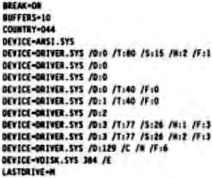

Scorpio News |
October–December 1987 – Volume 1. Issue 4. |
| Page 51 of 55 |
|---|
My current CONFIG.SYS is:
Hope this didn’t bore the pants off you, Regards
John Parrott
P.S. It is now clear that once disks are formatted, the system is quite happy using just logical drives A: and B:. It is probably unnecessary to have all those entries in the CONFIG.SYS file and I shall experiment with using a batch file to do formatting and this will contain temporary parameters and finish with a call to AUTOEXEC.BAT to restore normal system values.
P.P.S I’m not sure I can get at these values from a BAT file but I’m working on it.
This describes one method of transferring text and data files between a Nascom/Gemini hybrid and an Amstrad PC1512 computer.
Assuming that the following Nascom/Gemini system configuration and software is available:–
Nascom 2 with GM802 64k RAM and GM809 or GM829 disk system with 2 x 5.25″ Floppy Disk Drives (or equivalent Gemini or other system), CP/M Operating System with SYS Custom BIOS configured for IBM SSDD on Drive B:
Ed. – a far easier, but costlier, method is to use Gemini BIOS 3.2 or later, along with the optional (and in my opinion over-priced) IBM-COPY program. Or make use of Scorpio System’ disk transfer/copying service!....
| Page 51 of 55 |
|---|